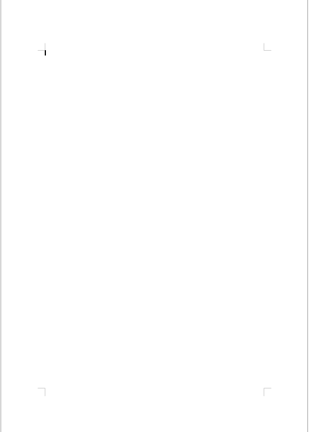
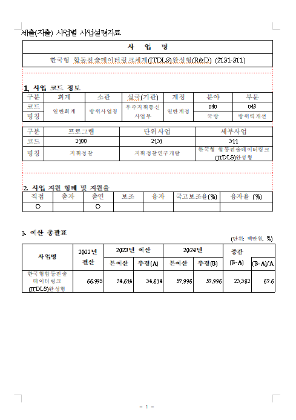
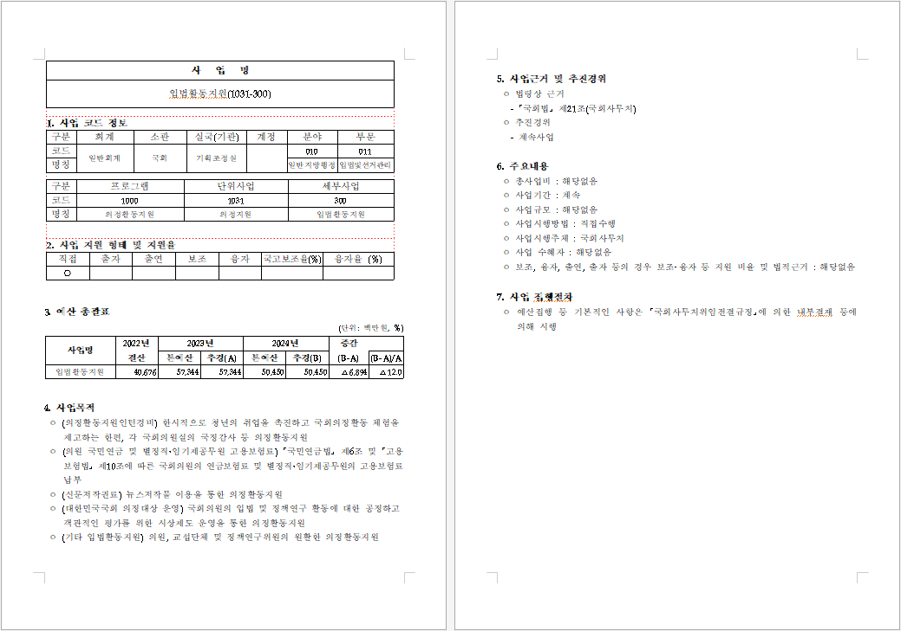
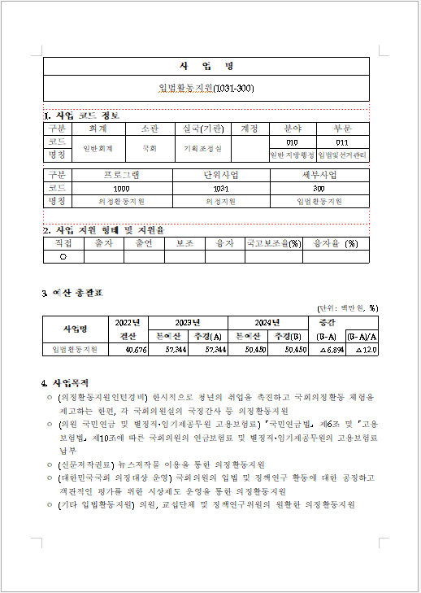

텍스트 분류 기반 · HWP/PDF → 16개 분야 자동 분류
xlsx에 사업명은 있으나 파일이 존재하지 않는 경우

파일은 존재하나 텍스트 레이어가 없는 경우 (빈 페이지 등)

파일 파싱 중 오류 발생 (손상된 파일, 지원하지 않는 형식 등)

사 업 명 입법활동지원(1031-300) 1. 사업 코드 정보 일반회계 / 국회 / 기획조정실 / 010 / 011 일반지방행정 / 입법및선거관리 ... 4. 사업목적 한시적으로 청년의 취업을 촉진하고 ...
예산 문서 본문에 분야명이 직접 노출되어 분류기가 실제 패턴 대신 키워드를 암기할 위험

같은 사업 문서가 train/test에 모두 포함되면 성능 과대평가
주의: 본 테스트셋은 정답 레이블을 비교적 쉽게 구분할 수 있는 구조여서 100% 성능이 나타났을 가능성이 있으며, 실제 수행 데이터에서는 성능이 달라질 수 있음
현재는 텍스트 레이어만 추출. 표 내 수치·구조 데이터 활용을 위한 파서 고도화 필요
전처리 도구와 청킹 방법을 추가로 학습하고, 문서 형태별 전처리 방식을 더 고도화할 예정
질문이나 의견 주시면 이어서 설명드리겠습니다.